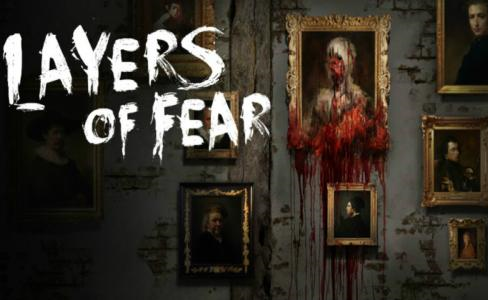
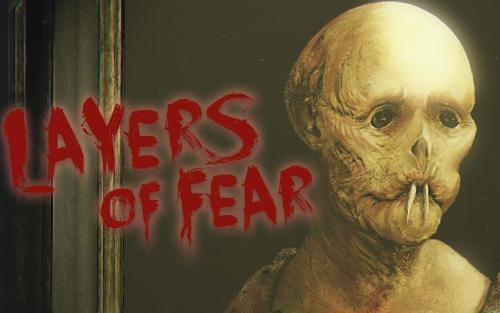

- 

- 
这是有关伟大画家内心黑暗的一部游戏，多样的房间，未知的道路，奇怪的声响，幽静的走廊，灰暗的地下室。而你，将要探索这栋豪宅，但要小心，“它”随时会来，恐惧时刻伴随着你，你将体验到最可怕的噩梦，但你还得寻找真相，这就是你的目的。 在游戏中，玩家们在了解一位发疯画家的思维时将会探索一间不断位移的19世纪风格的房子，你每转动一次视角，你周围的环境都会有变化。当视野一层一层清晰时，你会被恐惧和惊悚缠绕，并最终完成奋斗已久的杰作。
孤独与未知的展开-- 游戏的开始我们便独自一人来到一座破败的豪宅，游戏没有更多的背景介绍，甚至玩家并不知道自己扮演的是谁。游戏以第一视角展开，玩家可以自由在别墅内移动。整个游戏的光影画面非常优秀，房屋内的质感也真实阴暗，处处透露着荒废和阴森。游戏中玩家可以收集文献和道具来揭开游戏剧情，从而得知自己其实是这个房子的主人，是一个画家。
画出地狱的模样-- 整个游戏的主题是画，玩家扮演的是画家，贯穿剧情的是画，游戏以油画作为载体，将剧情的链接，恐怖气氛的烘托都交给了一幅幅不同的油画。从黑暗中挂在墙上扭曲的人像到最后异象世界恐怖的空间扭曲，都依靠油画来烘托恐怖气氛。随着玩家游戏的深入，我们知道自己来这里是为了完成我们最后的作品。并且随着游戏的深入，本身平静的房屋开始变得异样、扭曲并且传来哭声，接下来一切都有可能发生……
幽深走廊里传来的哭声-- 游戏中真正能够让玩家觉得背后发凉，并且直接导致游戏结局的主要原因便是房屋中女主的幽灵。或者说是画家内心产生的恐惧创造的幽灵。从游戏前半段走过漫漫长廊，远处玻璃窗上反射出的恐怖身影，到游戏中期背后传来的尖利叫声，到后来的我们不顾一切地往前狂奔，看到墙上写着“Don’t look back!”，女主的冤魂无疑承包了大量的惊吓工作。平静黑暗的过道里传来忧伤的哭声，也使得游戏氛围得到很大的提高。
物理空间的扭曲、光影的扭曲、人性的扭曲！-- 游戏进入到中期之后，玩家就会有一个巨大的疑问：为什么这个别墅里面如此巨大复杂，为什么这么多地方存在着明显的空间矛盾，比如连续四次的左转走廊后有一天非常长的走廊；本来是走廊的，转头后却变成了墙；一会儿是墙面一会儿又变成了地面。游戏后半程除了恐惧和阴森之外，游戏充斥着怪诞和诡异，这也暗示着玩家扮演的画家内心逐渐的扭曲和挣扎。玩家所见到的一切，都是由于内心罪恶的表现。
是自我的救赎还是人性的迷失-- 玩家需要完成最后的画作，来救赎自己的灵魂。玩家在每个章节的最后来活得关键性的道具，随着每一个章节过去，我们也会目睹画作的变化，在这个过程中，我们会分别去经历画家生命中最重要的回忆——女儿、妻子、财富和名利。这一切的背后解释了宅院发生了什么样的悲剧。